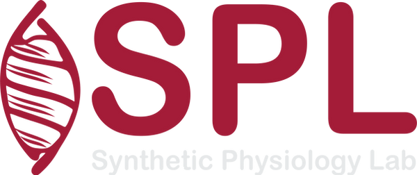

Eloisa and Melissa defend their PhDs
Congratulations to Dr Eloisa Torchia and Dr Melissa Pezzotti, who defended their PhDs after four years of advancing SPL's engineered culture, mechanobiology, and live-imaging platforms.
Read the story →Homepage mockup · desktop composition

University of Pavia
We build physiology through instrumented cells, tissue systems, computational modeling and analysis, and the visual culture that helps make complex biology thinkable.
News landing and archive mockup · responsive
Lab archive
Research, people, funding, events, awards, and open resources from the Synthetic Physiology Lab, from June 2020 to today.
8 recent stories
Congratulations to Dr Eloisa Torchia and Dr Melissa Pezzotti, who defended their PhDs after four years of advancing SPL's engineered culture, mechanobiology, and live-imaging platforms.
Read the story →First 18 stories, then archive by year
SPL shared lessons from building an ERC-funded programme with the next generation of European research leaders.
SPL presented its work at Janelia, connecting engineered tissues with physical and metabolic cell-state research.
A particle-based framework for probing nuclear mechanics and cell–matrix interactions with experimentally grounded parameters.
Engineered confinement, live FUCCI imaging, and analysis connect experiments to cell-cycle-aware phenotypes.
Francesco shared SPL's approach to engineering measurable physiology with cells, materials, and imaging.
The FUCCIplex collection makes SPL's cell-cycle-aware live-imaging toolkit easier to adopt and extend.
Francesco joins the Biophysical Society subgroup leadership for the 2026–27 term.
Semantic unmixing recovers richer biological information from multiplexed fluorescence images.
Full archive
Stable year pages keep every approved story reachable without JavaScript. Search adds speed, not dependency.
Full archive and search mockup · sample “FUCCI” results
News archive
Search the lab's research, people, events, resources, and milestones from June 2020 onward.
Across 2024–2026
4 March 2026
A vertically integrated system for tracking cell-cycle-aware phenotypes under engineered confinement.
13 February 2026
The FUCCIplex collection makes cell-cycle-aware live imaging easier for other laboratories to adopt.
2026
Multiplexed reporter acquisitions become quantitative trajectories of cell state.
December 2024
Cell-cycle-aware live imaging for phenotyping experiments and regeneration studies.
July 2026
Lessons from building a European frontier-research programme.
Try another person, project, event, or year, or clear the search to browse everything.